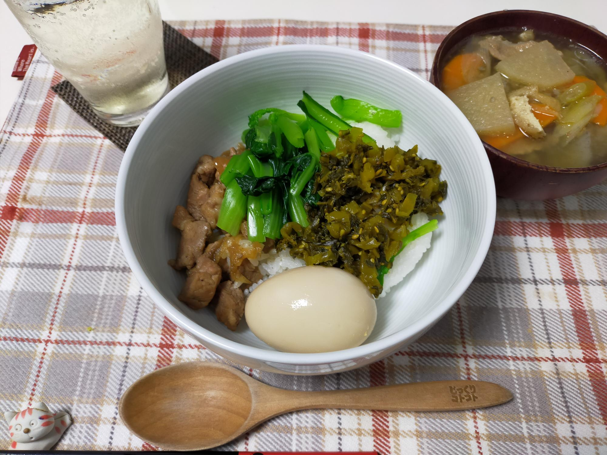

会社の最終出勤日でした
先日、８年半務めた会社の最終出勤日でした。長かったような、短かったような…。不安が多かったので、ほっとしました。
今後の方向性も決まっていないのですが、少し気楽に過ごしてもいいだろうかと思っています。
どんどん、涼しく過ごしやすくなって、食欲も増して、ついつい量を作りすぎ・食べ過ぎてしまいます。
レシピサイトといいつつ、どかんとした簡単料理ばかりで、料理をサボる日々です。
※レシピがない時もあります
先日、８年半務めた会社の最終出勤日でした。長かったような、短かったような…。不安が多かったので、ほっとしました。
今後の方向性も決まっていないのですが、少し気楽に過ごしてもいいだろうかと思っています。
どんどん、涼しく過ごしやすくなって、食欲も増して、ついつい量を作りすぎ・食べ過ぎてしまいます。
レシピサイトといいつつ、どかんとした簡単料理ばかりで、料理をサボる日々です。